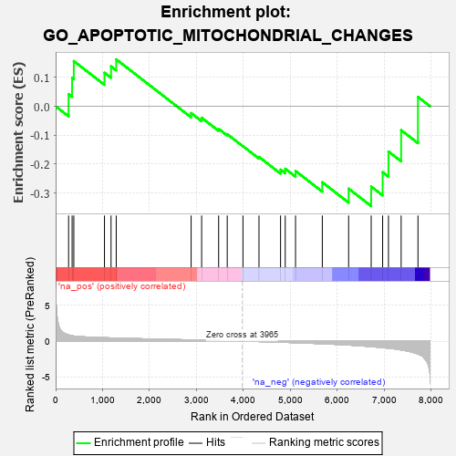
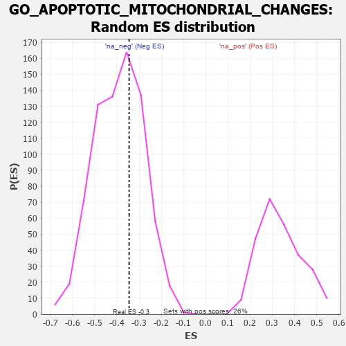

| | | Dataset | 7d |
| Phenotype | NoPhenotypeAvailable |
| Upregulated in class | na_neg |
| GeneSet | GO_APOPTOTIC_MITOCHONDRIAL_CHANGES |
| Enrichment Score (ES) | -0.34486693 |
| Normalized Enrichment Score (NES) | -0.87831545 |
| Nominal p-value | 0.64912283 |
| FDR q-value | 0.95925874 |
| FWER p-Value | 1.0 |
Table: GSEA Results Summary

Fig 1: Enrichment plot: GO_APOPTOTIC_MITOCHONDRIAL_CHANGES
Profile of the Running ES Score & Positions of GeneSet Members on the Rank Ordered List
| PROBE | GENE SYMBOL | GENE_TITLE | RANK IN GENE LIST | RANK METRIC SCORE | RUNNING ES | CORE ENRICHMENT | | 1 | HGF | | | 276 | 0.870 | 0.0418 | No |
| 2 | GSK3A | | | 351 | 0.745 | 0.0979 | No |
| 3 | BAX | | | 387 | 0.711 | 0.1560 | No |
| 4 | AKT1 | | | 1040 | 0.476 | 0.1158 | No |
| 5 | TFDP1 | | | 1180 | 0.450 | 0.1379 | No |
| 6 | PARL | | | 1290 | 0.432 | 0.1621 | No |
| 7 | PDCD5 | | | 2885 | 0.169 | -0.0236 | No |
| 8 | GPX1 | | | 3109 | 0.135 | -0.0397 | No |
| 9 | ATG3 | | | 3471 | 0.081 | -0.0780 | No |
| 10 | FIS1 | | | 3654 | 0.051 | -0.0965 | No |
| 11 | VPS35 | | | 3989 | -0.006 | -0.1379 | No |
| 12 | OPA1 | | | 4330 | -0.065 | -0.1750 | No |
| 13 | PIM2 | | | 4789 | -0.155 | -0.2189 | No |
| 14 | CLU | | | 4889 | -0.174 | -0.2160 | No |
| 15 | MMP9 | | | 5108 | -0.227 | -0.2235 | No |
| 16 | CASP8 | | | 5678 | -0.369 | -0.2625 | No |
| 17 | GGCT | | | 6239 | -0.550 | -0.2846 | Yes |
| 18 | GSK3B | | | 6719 | -0.768 | -0.2773 | Yes |
| 19 | DNM1L | | | 6963 | -0.913 | -0.2276 | Yes |
| 20 | STPG1 | | | 7087 | -0.986 | -0.1564 | Yes |
| 21 | WDR35 | | | 7357 | -1.225 | -0.0826 | Yes |
| 22 | BOK | | | 7715 | -1.817 | 0.0322 | Yes |
Table: GSEA details [plain text format]

Fig 2: GO_APOPTOTIC_MITOCHONDRIAL_CHANGES: Random ES distribution
Gene set null distribution of ES for GO_APOPTOTIC_MITOCHONDRIAL_CHANGES